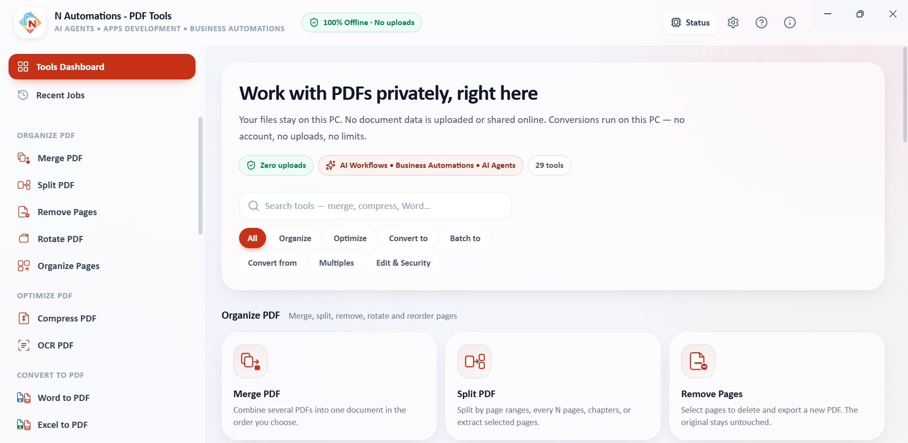
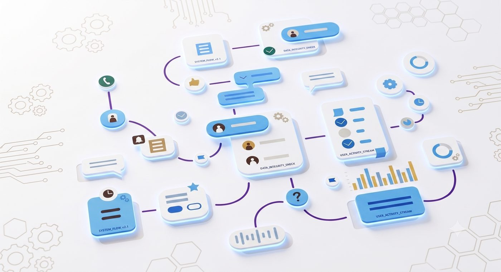

N Automations builds AI agents, business applications, workflow automations, dashboards, and intelligent document systems for pharma companies, engineering teams, and regulated operations.
From engineering workflows and customer enquiries to reporting, documents and internal operations — turn repetitive work into connected digital systems.


29 PDF tools in one free desktop app — merge, split, compress, OCR and convert to and from Word, Excel and PowerPoint. 100% offline: your files never leave your PC.
Domain understanding first — then the AI, the software and the workflow built around how your pharma or engineering team actually works.

We start with the real process — enquiries, quotations, projects, commissioning, service, QA and documentation — and map where time and information are lost before anything is built.
Pharma solutions
AI agents and assistants that read enquiries, extract requirements, answer from your technical knowledge, update the CRM and prepare follow-ups — with people approving what matters.
Explore AI agents
Web, Windows desktop and offline applications built around your process — including apps for local use on restricted PCs where internet access is limited or controlled.
Personalised apps
Connected workflows across email, Excel, PDFs, CRM, databases and dashboards — so enquiries, approvals, reports and follow-ups move without manual copying.
Workflow automation
We do not start with a chatbot. We start by understanding the real process, then design the software, AI agent and workflow around it.
For pharma manufacturers, engineering contractors, system integrators, water-treatment and utility-system companies, equipment manufacturers, and the QA, documentation, sales, service and project teams behind them.
AI enquiry assistant, customer support, internal knowledge assistant, email processing, requirement extraction, CRM creation and follow-up automation.
Enquiry → quotation → PO tracking, project follow-up, site visits, commissioning, service, approvals, maintenance and WTP / RO / DM / utilities workflows.
PDF, Excel, email and engineering documents — extract, classify, summarise, compare, route and turn them into structured data and reports.
KPI dashboards, quotation analytics, sales pipeline, project status, pending payments, department and management reporting.

Many plants and engineering offices run PCs with restricted or no internet access. We build custom applications that run locally, work offline and fit controlled environments — alongside web apps, dashboards, CRMs and portals.

An enquiry agent that reads a customer email and drafts the requirement sheet. A knowledge assistant that answers from your technical documents. A follow-up agent that reminds the team before a quotation goes cold.

KPI and trend dashboards across departments, built on the data your workflows already produce — plus monitoring of the systems and processes behind them.
n8n, APIs, MCP, databases and AI models are the implementation layer. What you see is the outcome: work that moves on its own from one step to the next.
Email → AI extraction → CRM → quotation → follow-up → dashboard.
PDF / Excel → AI extraction → review & validation → database → report.
Web / WhatsApp → AI agent → knowledge base → CRM / API → human hand-off.
AI agent → tools → business systems, with custom logic, reliable data & hosting and cross-device sync.

An MCP and API layer gives AI agents a controlled bridge into your CRM, ERP, databases, spreadsheets and legacy software — so the AI works on real data, within the actions you allow.
We map the real process with your team — documents, tools, handoffs and bottlenecks.
We design the software, AI agent and workflow around that process and review it with you.
We build and test against real data and documents before anything goes live.
We deploy, monitor and improve — then expand to the next workflow when the first one works.

N Automations is a Hyderabad-based AI, software and automation company founded by K. Ramakrishna. We focus on pharmaceutical companies, pharma engineering organisations and regulated industrial operations — where enquiries, quotations, projects, service and documentation run on people, email and spreadsheets.
We combine that process understanding with AI agents, custom software and workflow automation — building practical digital systems, one high-value workflow at a time.
With one workflow your team repeats every day — for example enquiry-to-quotation, report preparation or document review. We automate that first, then expand when it works.
Yes. We build applications that can run locally and offline on restricted PCs, designed around your IT constraints. The deployment approach is agreed with your team for each project.
Yes — we connect to the email, Excel, CRM, ERP, databases and document folders you already use, rather than asking you to switch platforms.
Yes — assistants can be grounded in your documents, products and procedures, and only take the actions you approve during design.
Tell us about the process, task, or document flow eating your team's time — we'll come back with how we'd automate it.
Follow along
Start with one workflow. Expand when it works.
To help us prepare, share: